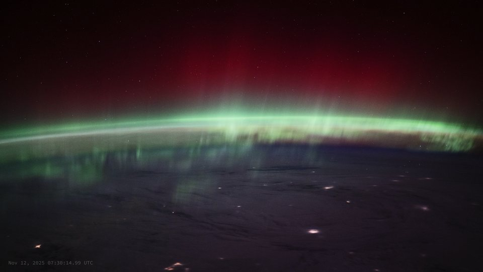
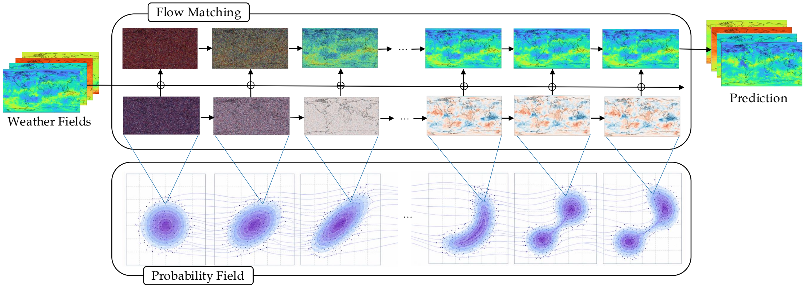
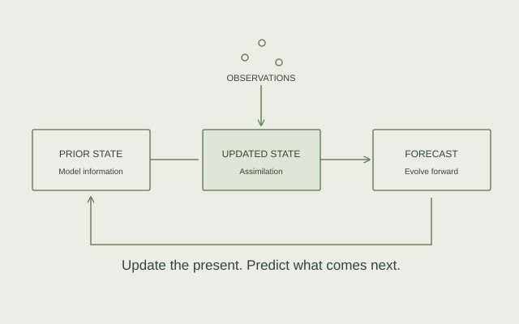
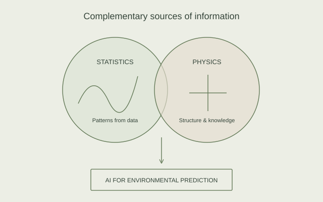

02 / RESEARCH
Statistics, physics
& AI.
“A single lifetime, even though entirely devoted to the sky, would not be enough for the investigation of so vast a subject.”
RESEARCH AREAS
How can we learn from observations, incorporate physical knowledge, and predict systems that evolve across space and time?
Papers & preprints ↗
01 / CONNECTED ENVIRONMENTS
Terrestrial &
space weather.
My applications span terrestrial weather and the near-Earth space environment, including the ionosphere and thermosphere. I am interested in how these environments interact, and how their connections can inform forecasting.
This motivates a common modeling perspective: learning spatiotemporal dynamics while accounting for different observations, physical processes, and scales.

02 / STATISTICAL DEEP LEARNING
Generative
forecasting.
How can a model represent the range of futures consistent with what we know now? I study statistical deep learning and generative methods, especially flow matching, for forecasting evolving spatial fields.
I am interested in learning the structure of these dynamics and representing forecast uncertainty across terrestrial and space weather applications.

03 / LEARNING FROM OBSERVATIONS
Data assimilation &
state estimation.
Forecasting begins with an estimate of the present. I explore data-driven approaches that combine observations with model information to estimate system states and initialize forecasts.
My interests include connecting assimilation and forecasting within learning-based models, particularly when observations are incomplete and the underlying dynamics are complex.

04 / SCIENTIFIC MACHINE LEARNING
Physics-guided
statistical learning.
Data reveal patterns; physical knowledge provides structure. I investigate how governing equations and domain knowledge can guide statistical and machine learning models.
My goal is to connect the flexibility of AI with the structure of physical models, studying how they can complement one another in environmental prediction and data assimilation.